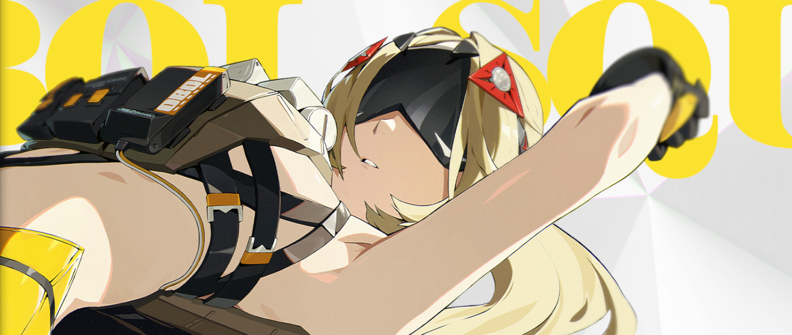
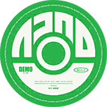
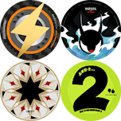

Trigger Quick Guide
Written by Cyxo. Thanks to Ai Chan Λ and Timely⌖Trigger for their feedback.
Introduction
This is a quick guide on how to build and play Trigger and what characters she synergizes with. If you want a more in-depth guide, you can check our Trigger Full Guide.
You can also check the Frequently Asked Questions section, which may answer most of your questions!
TL;DR
Trigger is an Electric - Stun agent of the OBOL Squad faction. Her role in a team is that of an off-field stunner with good supporting abilities with a damage buff for out-of-stun and stunned enemies, and even more with her signature W-Engine that reduces the enemy DEF by 25% at O1.
This makes her a perfect team-mate for DPSes that require a long time on the field.
She has a unique passive in her Additional Ability that converts her Crit Rate between 40% and 90% into up to 75% daze efficiency on her off-field attacks.
If you need it, here is a quick overview of how to build her:
How to play Trigger?
Trigger has a meter called Purge that you can see under her icon at any time.

To gain Purge, you can hold the attack button to enter Sniper Stance. You need 4 sniper shots to fully charge the meter, but in most rotations, you don't have to fully charge the meter, and 2 shots are usually enough. Releasing the attack button will trigger (lol) a Quick Assist.

When she has Purge, and an ally deals damage, she will do an Aftershock attack on the enemies (once every 3 seconds at M0), increasing their daze and consuming Purge. She will do additional Aftershock attacks when the ally uses an EX skill, Assist follow-up or Ultimate.
Trigger can enter the Coordinated Support state after using an EX special attack (4 shots, 8 seconds) or Ultimate (6 shots, 12 seconds). In this state, her Harmonizing Shots have no cooldown and consume no Purge.

Duration and shot counts from different skills can stack with each other, up to 10 shots and 20 seconds. This also triggers a Quick Assist.
About Trigger's Quick Assist
Trigger's Quick Assist cycles backwards through the team, like Pulchra's and Seth's, so it will switch to the previous character in the team order!
Her Defensive Assist and Assist Follow-up also deal a decent amount of daze, so it's worth using them!
Here's a summary of Trigger's gameplay:
- Hold basic attack to gain Purge
- Use EX or Ultimate when you can
- Switch to your DPS and let her cook
Team compositions
Trigger's Additional Ability requires her to be paired with an Attacker or Electric character. This gives her a good flexibility when it comes to team compositions.
Example teams
Here are some team examples featuring Trigger:
On-field Attacker

This is Trigger's strongest team at her release. Silver Soldier Anby synergizes very well with Trigger, but this team also works with other on-field DPSes like Ellen or Evelyn as. Astra Yao can be replaced with any other support, Caesar, or Pulchra if you don't have a better option.
On-field Anomaly

Teams with an on-field Anomaly DPS can work. Yanagi enables Trigger's Additional Ability, but other Anomaly DPSes can work as long as you have an Electric agent in the team. The 3rd agent can be either a Defense agent (like Seth or Caesar), a support (like Rina) or another Anomaly character.
Dual-Stun

This works best for burst DPSes that require little field time but need a frequent stun-window to deal damage, like Harumasa or Zhu Yuan. The other stun agent can take the remaining part of the field time.
Notable synergies
| Agent | Notes |
|---|---|
| As you could guess from the team compositions, the new Silver Soldier Anby synergizes well with Trigger. Her Core Skill buffs the Aftershock damage from the whole team, which benefits herself but also Trigger. She enjoys having a lot of field time too, which suits Trigger's off-field style well. | |
 |
Qingyi is the opposite of Trigger: an on-field Electric Stun character. So when they're paired together, Qingyi can take the field time and together they can stun the enemy very quickly. This works especially well in double-stun teams with a burst DPS that enjoys frequent stun windows like Harumasa. Qingyi being Electric, she also enables Trigger's Additional Ability. |
| Like Qingyi, Rina is an Electric agent, so she also enables Trigger's Additional Ability. Trigger being an off-field stunner, she frees a lot of field time for Rina to come refresh her rather short buff. | |
 |
Pulchra can synergize with Trigger, allowing for faster stuns and more DPS field time. The gameplay is a bit strange due to the double backwards Quick Assist, bust still playable. Just make sure you used up all of Pulchra's stacks before switching back to her. |
Possible anti-synergies
These are not always anti-synergies, just some attention points when building teams with Trigger.
| Agents | Notes |
|---|---|
 |
Burst DPSes like Harumasa or Zhu Yuan have big downtimes in their elemental damage, which is why they're usually paired with an on-field Stun character. Therefore, in a team with Trigger, both are going to fight to not have the field time. However, this can work better if the 3rd character on the team is an on-field Stun character like Qingyi. But beware that you could be missing out on some bigger buffs from using a support instead of Trigger. |
| At first glance, Evelyn and Soldier 11 look like they would have a rather good synergy with Trigger, since they are both field-heavy DPSes. However, bosses that are weak to Fire are often resistant to Electric, which would highly impact Trigger's daze efficiency. So when the bosses are resistant to Electric damage, a Fire Stun character like Lighter or Koleda would still be significantly better. |
Skill priority
Here is Trigger's skill leveling-up priority, as recommended by the game:
Mindscapes overview

The Stun DMG Multiplier applied through Core Passive: Soul-Searching Gaze is increased by an additional 20%. When activating Basic Attack: Harmonizing Shot, the cooldown is reduced to 2s. Purge gained upon hitting an enemy with the continuous fire or charged counter in Sniper Stance increases by 25%. Maximum Purge increases to 125.
- Great Mindscape
- Improves Trigger's team damage buff
- Reduces off-field attacks cooldown
- Increases the maximum amount of off-field attacks stacks
Upon using an Aftershock, Trigger gains 1 stack of Hunter's Gaze. When executing a Finishing Move in Sniper Stance, Trigger gains 2 stacks of Hunter's Gaze. Each stack of Hunter's Gaze increases all squad members' CRIT DMG by 6%, stacking up to 4 times, and lasting 10s. Repeated triggers reset the duration.
- Great Mindscape as well
- Gives Trigger a team-wide crit. damage buff, up to 24%

Basic Attack, Dodge, Assist, Special Attack, and Chain Attack Lv. +2.
- Generally good Mindscape
- Levels up Basic Attack so slightly improves off-field attacks' daze dealt
- Pretty art
When Trigger enters or extends Coordinated Support, while the state is active, the next time other squad members trigger Basic Attack: Harmonizing Shot or Basic Attack: Harmonizing Shot - Tartarus, it will trigger Disconnect upon hitting an enemy, dealing additional DMG equal to 200% of Trigger's ATK and inflict Daze equal to 120% of Trigger's Impact. This skill has a relatively high Interrupt Level.
- Rather good Mindscape, great stopping point
- Increase in her off-field attacks' damage and daze dealt
Basic Attack, Dodge, Assist, Special Attack, and Chain Attack Lv. +2.
- Generally good Mindscape
- Same as M3

Upon entering the battlefield, Trigger gains 5 Armor Break Rounds. For every 25 Purge consumed, Trigger gains 1 additional Armor Break Round, up to a maximum of 5 rounds. While possessing Armor Break Rounds, when Trigger hits a target in Sniper Stance, 1 Armor Break Round is consumed to deal additional Electric DMG equal to 1,200% of Trigger's ATK. In addition, this instance of DMG is additionally increased by 50%. This effect can trigger once every 0.2s.
- Huge increase of her on-field damage in Sniper Stance
- Do 5 sniper shots for maximum damage
- Prettier art
W-Engines
Her signature weapon Spectral Glaze is obviously the best for her, and by a significant amount. With a unique Crit Rate main stat, and an effect that reduces the enemy DEF by 25% while also increasing her Impact, it's hard to find an alternative W-Engine that can compete. But she is still more than playable with alternatives, so here is a list:
| W-Engine | Notes |
|---|---|
 Spectral Gaze |
Her signature weapon. Obviously the best choice, with a great supporting ability and the highest increase in her daze potential among the Stun W-Engines. |
 Ice-Jade Teapot |
The best gacha alternative! Trigger can max out the buffs fairly quickly. But let's be honest, if you have Ice-Jade Teapot, you probably have Qingyi and you'll probably want her to use her signature weapon. |
 The Restrained |
Lycaon's signature W-Engine. The best "free" alternative. Trigger's off-field attack can consistently refresh the daze buff of this weapon. |
Fossilized Core |
The best A-rank alternative, especially for Deadly Assault. Doesn't need any special gameplay to trigger its effects, but you're going to see a great downtime if you can't kill the enemy quickly after the first stun window (like against Shiyu Defense bosses). |
 Box Cutter |
Despite buffing Physical Damage, this weapon can also grant 15% Impact and 16% bonus daze to Trigger pretty consistently, which makes it a better option in Shiyu Defense or other game modes with highly resistant enemies. |
 Blazing Laurel |
Lighter's signature engine. A great option for an Ice or Fire DPS. She can get max stacks just like the other S-rank W-Engines, thanks to her off-field attacks being considered Basic Attacks. |
| Other Stun W-Engines |
Not much to say about these... The other W-Engines mentionned above are better. These have a slow build-up at the start, but become good midway. |
| Crit Rate W-Engines |
Worse than Stun W-Engines in general. |
Pull priority?
Should I pull for her signature W-Engine or her Mindscapes first?
Her M1 and M2 are great! But not as great as everything her signature weapon gives her, so the W-Engine is still the highest priority!
Should I pull Anby's or Trigger's W-Engine?
Depends on what your goal is.
If you're pulling Trigger only to strengthen your S Anby team to the maximum, then Anby's weapon is definitely a higher upgrade.
If you want your Trigger to be useful in as many teams as possible, then Trigger's weapon will be more important.
Drive discs
Since Trigger is a Stun agent, you will want to maximize her Daze dealt. And for that, you can either choose discs that directly increase her Impact or Daze dealt, or take advantage of her passive that converts her Crit Rate up to 90% into up to 75% Daze dealt.
4-set
| Disc set | Notes |
|---|---|
 Shockstar Disco |
The disc 4-set that gives her the most daze potential, with 6% impact and 20% daze efficiency. Can be paired with Woodpecker Electro if more Crit Rate is required to cap her conversion. |
 Shadow Harmony |
A good 4-set that gives up to 12% Crit Rate, resulting in 18% more daze dealt for Trigger. Less than Shockstar Disco, but this set also increases her own damage. It is the best 4-set for M4+ Trigger, but still usable at M0 if you have good stats on it. The downside is that you may be over-capping her conversion with W-Engine and discs stats. |
Proto Punk |
The only 4-set for her that can buff the team's damage consistently, at the cost of her daze dealt. A bit annoying to refresh as you have to do Defensive Assists pretty often. Can be used for a more "support build" for Trigger, but definitely not her main build. |
2-set
| Disc set | Notes |
|---|---|
Woodpecker Electro |
Easy way to get closer to 90% Crit Rate for her conversion. Works with all the 4-set options mentioned earlier. |
Shockstar Disco |
Only works with the Shadow Harmony (or the Proto Punk) build. Good if you already cap her Crit Rate conversion, otherwise Woodpecker Electro is still better. |
|  Swing Jazz |
Could be a good idea if you already reached the 90% Crit Rate cap. Allows Trigger to enter the Coordinated Support state more often to stun the enemy faster. |
|  Offensive discs |
Offensive options for if you already reached the 90% Crit Rate cap, to maximize Trigger's potential by increasing her damage. |
Disc stats
Once again, because of her Crit Rate to Daze conversion up to 90% Crit Rate, you will want to reach that cap with disc stats. Since she is a Stun character, Impact disc 6 is obvious. The other substats are offensive substats to get as much extra damage as possible out of her.

Frequently Asked Questions
Who is Trigger?
Trigger is a sniper in the Obol Squad of the New Eridu Defense Force, alongside currently playable character Soldier 11 for instance. During an event in the old Eridu, her eyes got infected with ether, giving her supernatural vision, at the cost of having to wear a mask to prevent her eyes from "volatilizing".
What do we know about Trigger?
Faction: Obol Squad
Appearance: Trigger is a tall, blonde woman wearing a mask covering the upper part of her face. She's dressed in black and light orange like other Obol Squad member Soldier 11.
Weapon: She wields a black and light orange sniper.
Is she voiced?
Yes!
EN: Not announced
CN: Qin Ziyi (秦紫翼)
JP: Nanjō Yoshino (南條 愛乃)
KR: Lim Eun-ji (임은지)
Will Trigger be playable?
Trigger has been drip marketed as a playable S rank, Electric Stun character. She will release in ZZZ version 1.6 along Silver Soldier Anby.
What role does she play in a team?
She is a stun character so her main focus will be stunning the enemies. She has off-field attacks, making her rather different from the usual Stun characters that take a lot of field time.
Playing Trigger as a main DPS seems complicated right now, every beta change made her even closer to a Stun character and further away from an on-field DPS (but an off-field main DPS might work in a double-carry team).
Does Trigger work with [character]?
This question is asked pretty often, mainly "Does/will Trigger work with Soldier 11?"
Right now, the new character Silver Soldier Anby should be her best partner, because of their great synergy with their new gameplay element called "Aftershocks".
However, Trigger is still a good general Stun character with any other DPS. For Soldier 11 and Evelyn specifically though, most fire-weak bosses are resistant to electric, so it might not be the best combo ever.
What drive discs does she need?
The best 4-set right now is Shockstar Disco, as it's the set that gives her the most daze potential. The new 1.6 set Shadow Harmony is also playable, favoring her personal damage at the cost of some daze. However, it becomes her best 4-set starting at M4.
As for the 2-set, it will likely be Woodpecker Electro (crit rate) if you need more crit rate to cap her conversion (the cap is at 90% crit rate). If you don't need more crit rate, you can use any offensive 2-set, or Swing Jazz if you feel like you want her Coordinated Support state more often.
For info on the disc stats, check out the disc stats section of this guide!
Does she need her W-Engine?
Trigger has a crit rate to impact conversion, up to 90% crit rate. So obviously her weapon gives crit rate to help reach that high cap, which is a unique stat among stun W-Engines.
You can always use a regular impact W-Engine, to get the impact without the crit rate. The performance with any other Stun engine (S-ranks like Lycaon's, Koleda's etc., A-ranks Anby's, Pulchra's, fossile etc.) is similar and noticeably below her signature engine. Attacker engines with Crit Rate aren't worth it.
It's also important to note that her W-Engine has a 25% DEF reduction effect. In addition to that, it also gives her even more impact, making alternative stun engines look weaker.
Does she really need 90% Crit Rate?
Yup, or as close as you can get to 90%! Losing even 10% Crit Rate means losing 15% daze efficiency, you wouldn't want that to happen! However, don't think about substituting Shockstar Disco for Shadow Harmony just to get more Crit Rate. Shockstar Disco still provides better buffs. Same for using Crit Rate engines instead of Impact ones. If you want more Crit Rate, you've just got to get better substats!
How does she compare to Lighter/Qingyi/...?
Most of her daze is dealt off-field, while another on-field agent is also dealing daze to the enemy, so it's really hard to compare. But her time-to-stun seems balanced with the other limited Stun agents, so who you use is more a matter of team composition.
Closing statement
In conclusion, Trigger is a new Stun character with a very off-field playstyle, similar to Pulchra who released earlier the same version, but with even less field time required.
She can be played with most DPSes with some clever team building tricks, and will be the BiS stunner for Aftershock DPSes like the new Silver Soldier Anby.
Thanks to everyone who helped work on this guide, and thank you for reading!
We will keep the guide updated as future content gives Trigger new gameplays or team opportunities!